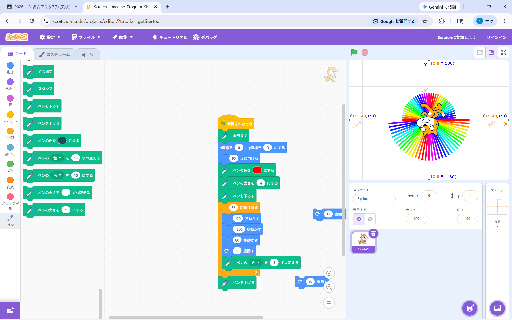
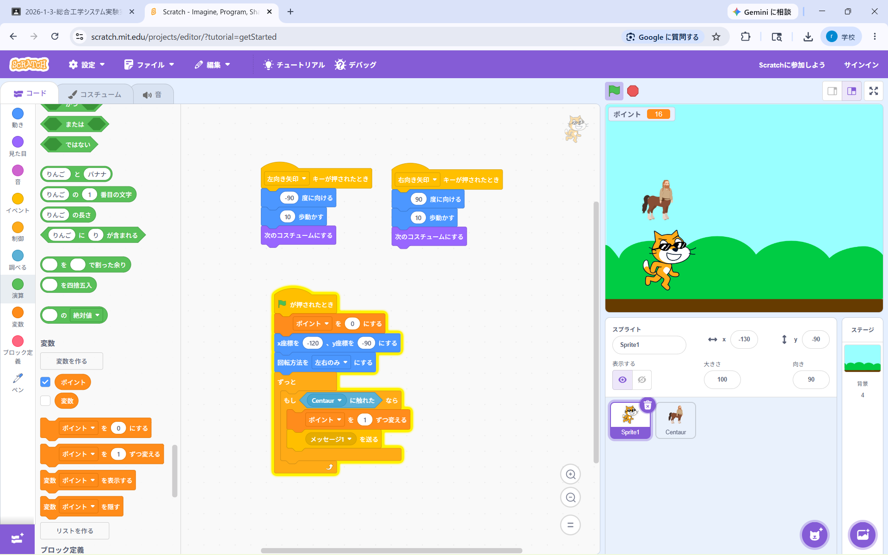

1週目のレポート ： 公大高専１年実習I-1
3a班19番 小林 史佳
第1週目
1-1 サイエンスアート

1.内容
Scratchというプログラミングソフトを利用して、サイエンスアートを作った。この体験で、プログラミングの基礎やブロックの使い方などを学んだ。
他にも、ペンの色や角度などを変えて、円を模した様々な図形を描いた。
2.感想
Scratchについて、プログラミングソフトとして名前は聞いたことがあったが、実際に使うことはなかったので、とても新鮮だった。
簡易的なブロックだけで図形を描くことができ、非常に扱いやすかった。
1-2 ゲーム

1.内容
Scratchを利用して、上から落ちてくるものをキャッチするとポイントが加算されるゲームを作った。
この体験で、スプライトに別の動きを指定するなら、それぞれに異なるプログラムを割り当てる必要があることを学んだ。
2.感想
まさか自分にもゲームを作る日が訪れるとは思ってもみなかったので、実際に作ってみてとても楽しめた。
もっと複雑なコードを使っているのかと思ったが、プログラム自体はそこまで難しくなかったので、少し驚いた。
1-3 ホームページ作成
私のホームページ
1.内容
Githubを使って、自分の特技、趣味を紹介するホームページを作成した。
この体験で、簡単なホームページの作り方や、Githubの使い方について重点的に学んだ。
2.感想
自分でホームページを作るのは初めてだったので、多少手間取ったところもあったが、全体を通して大変興味深い体験だった。
また機会があれば、自分でも何かサイトなどを作ってみたいと感じた。
各ページへのリンク
1週目のレポート
2週目のレポート
3週目のレポート
私のホームページ